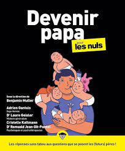
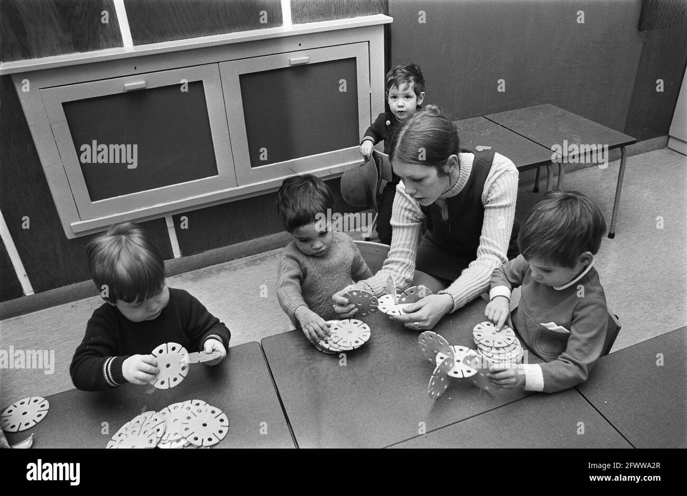
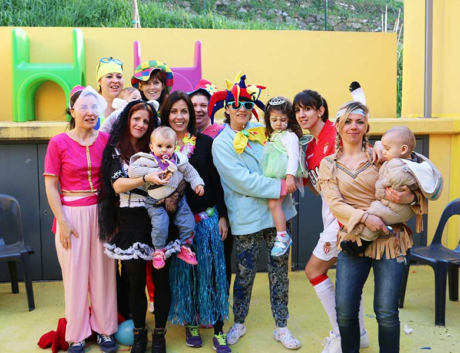
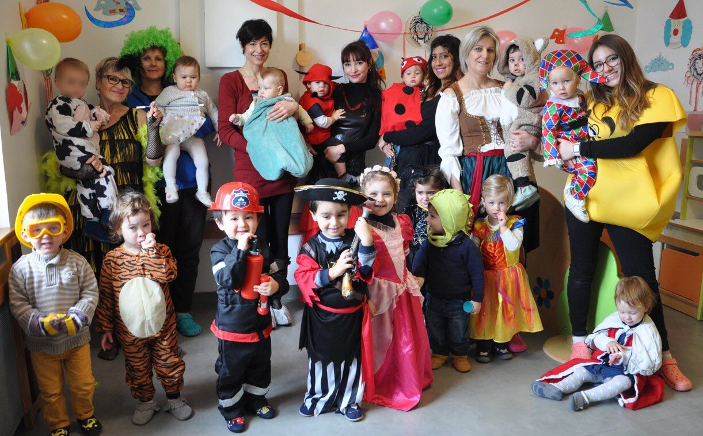

Séance 3 : Services à la personne
Médecins et Puéricultrices en Protection Maternelle et Infantile (PMI) recherche d’identité
D’aprés une étude de Bouchayer (1984)
Les médecins et puéricultrices travaillent dans le soin des enfants jusqu’à 6 ans. Leur travail a changé pour inclure non seulement la santé mais aussi le soutien psychologique et social.
Changements dans le Travail
- Contexte : Le travail des médecins et puéricultrices en PMI, centré sur les soins aux bébés et enfants jusqu’à 6 ans, s’est transformé. Auparavant axé principalement sur la santé physique, il englobe maintenant le soutien psychologique et social.
- Baisse de la mortalité infantile : Depuis les années 50, avec la diminution de la mortalité infantile, l’accent de leur mission a évolué vers le développement de l’enfant et le soutien aux familles.
- Approche éducative et relationnelle : Leurs fonctions s’orientent davantage vers l’éducation à la santé et le renforcement des relations avec les familles.
- Collaboration interprofessionnelle : Ils travaillent désormais en étroite collaboration avec d’autres spécialistes pour offrir une aide complète aux familles.
Médecins et Puéricultrices en Protection Maternelle et Infantile (PMI) : Évolution des Rôles
Contexte : Le travail des médecins et puéricultrices en PMI, centré sur les soins aux bébés et enfants jusqu’à 6 ans, s’est transformé. Auparavant axé principalement sur la santé physique, il englobe maintenant le soutien psychologique et social.
Baisse de la mortalité infantile : Depuis les années 50, avec la diminution de la mortalité infantile, l’accent de leur mission a évolué vers le développement de l’enfant et le soutien aux familles.
Approche éducative et relationnelle : Leurs fonctions s’orientent davantage vers l’éducation à la santé et le renforcement des relations avec les familles.
Collaboration interprofessionnelle : Ils travaillent désormais en étroite collaboration avec d’autres spécialistes pour offrir une aide complète aux familles.
Impact des Nouvelles Professions et Institutions
Émergence de spécialistes : L’apparition de nouvelles professions et de structures dédiées à la petite enfance nécessite l’acquisition de compétences spécifiques pour les médecins et les puéricultrices.
Influence des familles : Les préférences et les besoins exprimés par les familles jouent un rôle croissant dans l’orientation des soins et des services proposés par ces professionnels.
Union des Professionnels Autour d’une Mission Commune : Collaboration et Soutien
Les médecins et les puéricultrices, malgré leurs rôles et formations distincts, sont unis par un objectif commun : le bien-être des enfants. Cette mission les conduit à collaborer étroitement non seulement entre eux mais aussi avec les parents et autres personnes s’occupant des enfants, pour offrir un environnement “sain” et propice au développement de chaque enfant.
Diversité des tâches : Leur intervention couvre un large éventail d’actions, allant de la prévention médicale, le suivi de la croissance et du développement de l’enfant, à l’apport de soutien éducatif et psychologique.
Communication tripartite : Les échanges entre l’enfant, son accompagnant et le professionnel de santé sont fondamentaux. Ils visent à créer un espace de dialogue ouvert, où l’information circule librement, dans le but d’harmoniser les soins et le soutien apportés à l’enfant.
Le Genre dans les Lieux d’Accueil de la Petite Enfance
D’aprés l’enquête de Cresson (2010)
Exercice : regardez ce reportage sur une créche Crèches Privées : Un Secteur Dans La Tourmente - Regarder Le Documentaire Complet | ARTE (n.d.) : https://www.arte.tv/fr/videos/116991-000-A/creches-privees-un-secteur-dans-la-tourmente/
Observez la place du genre
- Majorité des employés de crèche sont des femmes.
- Naturalisation du Féminin : Les caractéristiques féminines sont souvent vues comme innées, avec une valorisation différente des traits masculins.
La majorité des employés dans les crèches étant des femmes, cela renforce l’idée que les qualités dites féminines, comme la tendresse et le soin, sont naturelles et essentielles pour s’occuper des enfants. Cette vision tend à valoriser différemment les caractéristiques masculines, associées souvent à l’autorité et à la force, créant une séparation dans les rôles attendus des hommes et des femmes.
Différence de Traitement
Les filles sont moins encouragées dans certaines activités que les garçons, qui sont poussés vers le développement physique.
Par exemple, dans les jeux de plein air ou les sports, les garçons sont fréquemment poussés à être actifs et à prendre des risques, tandis que les filles sont dirigées vers des activités plus calmes ou relationnelles.
- Les adultes traitent parfois les filles et les garçons différemment sans vraiment s’en rendre compte.
Cette manière d’agir montre qu’ils ne voient pas toujours comment les idées sur le genre affectent ce qu’ils font. Cela peut être dans la façon de choisir des jeux, de réagir à des comportements ou même dans les attentes qu’ils ont envers les enfants
Même si on parle beaucoup d’égalité entre les filles et les garçons, dans la réalité, les choses se passent souvent autrement.
Les actions quotidiennes, comme le choix des jouets, des activités ou la manière de parler aux enfants, continuent de suivre les vieilles idées sur ce que les filles et les garçons devraient faire ou être.
Les idées préconçues sur ce que devraient être ou faire les filles et les garçons commencent très tôt dans la vie.
Ces préjugés peuvent limiter les possibilités d’exploration et de développement des enfants en leur faisant croire qu’il y a des choses qu’ils ne peuvent pas faire simplement à cause de leur genre.
Monopole Féminin Ancien :
- Depuis le XIXe siècle, les femmes dominent ce secteur, influençant les rôles de genre contemporains.
- Les femmes issues de la bourgeoisie occupent des postes de gestion, tandis que les pauvres sont plus impliquées dans le soin quotidien.
- Les hommes tendent à avoir des rôles de direction, et les femmes sont plus souvent en contact direct avec les enfants.
Discours sur l’Absence des Hommes
- Contradictions : On parle de la nécessité d’hommes pour l’autorité mais aussi des risques liés à leur présence.
D’un côté, la présence masculine est parfois valorisée pour apporter de l’autorité et un modèle de rôle différent aux enfants, suggérant que les hommes peuvent contribuer à un environnement plus équilibré et diversifié pour le développement des enfants. Cette perspective peut aussi venir de la croyance que les hommes apportent des styles d’interaction, de jeu et d’apprentissage qui complètent ceux des femmes, offrant ainsi une gamme plus large d’expériences aux enfants.
De l’autre côté, des préoccupations émergent quant aux risques associés à la présence d’hommes dans ces espaces, souvent enracinées dans des stéréotypes de genre et des peurs culturelles. Ces inquiétudes peuvent inclure des questions de sécurité, des doutes sur la capacité des hommes à fournir des soins appropriés et affectueux, ou même des suspicions infondées sur leurs motivations pour travailler avec de jeunes enfants.
Analyse des Rôles Parentaux dans la Presse Spécialisée
Le rôle maternel est vu comme inné, tandis que celui du père est considéré comme acquis et à apprendre. Delforge (2006)1 explore les représentations des rôles parentaux dans quatre revues spécialisées entre 2003 et 2004.
Distinction entre Mères et Pères
Les magazines veulent montrer hommes et femmes égaux, mais ils séparent encore les rôles des mères et des pères. Les mères s’occupent surtout des besoins de base de l’enfant et sont très proches de lui. Les pères, eux, sont vus comme ceux qui apportent de nouvelles expériences, de l’autorité et du jeu.
Le Nouveau Rôle des Pères : Partage des Tâches entre Parents
On parle de “nouveaux pères” qui s’impliquent plus avec leurs enfants dès le début. Mais en réalité, ils sont surtout là pour jouer ou éduquer de manière ludique. Leur rôle d’autorité est aussi mis en avant.
Bien que les hommes participent un peu plus à la maison, ils le font moins que les mères. Les mères restent les principales responsables de l’éducation et des soins des enfants. Les pères aident, mais ne partagent pas totalement ces responsabilités2.

“Ainsi : “Si être mère consiste à donner la vie, être père consiste à donner le sens” (Les professionnels de l’enfance, n° 28, p. 52). “Pour le sujet, le père représente la loi, il sépare la mère de l’enfant, l’introduit dans le langage et le social” (Id., p. 50). “L’absence du père livre la fille et le garçon à la mère et les menace dans la construction de leur identité sexuée” (Ibid.). “Le tiers (le père), c’est cet ailleurs qui fait rêver, penser ou agir […]. C’est un élément indispensable au bon développement psychique, qui procure un espace de pensée dans la relation mère-bébé” (Les professionnels de l’enfance, n° 22, p. 51)” Delforge (2006)
Jeux et Activités
Les jeux sont fréquemment répartis selon les stéréotypes de genre.

Dans les lieux pour enfants, on voit souvent que les filles jouent avec des poupées ou font semblant de s’occuper des autres, ce qui est vu comme doux ou lié à la relation avec les autres. Les garçons, eux, sont plus poussés vers des jeux où ils bougent beaucoup, font des compétitions ou construisent des choses.
Idées reçues pendant les Fêtes
Les événements comme le carnaval renforcent les stéréotypes de genre.


Les fêtes et célébrations, telles que le carnaval, offrent des occasions où les stéréotypes de genre sont souvent amplifiés et visiblement mis en avant. Pendant ces événements, les choix de costumes et les rôles attribués aux enfants peuvent renforcer les idées traditionnelles sur ce qui est considéré comme approprié pour les filles et les garçons.
Par exemple, les filles peuvent être encouragées à se déguiser en princesses ou en fées, mettant l’accent sur la beauté et la douceur, tandis que les garçons peuvent être poussés vers des costumes de super-héros ou de pirates, valorisant l’aventure et la force.
Micro-Événements
Des interventions quotidiennes soulignent les différences de traitement basées sur le genre.
Les micro-événements dans les crèches et les lieux d’accueil pour enfants illustrent comment les interactions de tous les jours peuvent révéler et renforcer les différences de traitement selon le genre. Ces moments, bien que subtils, jouent un rôle significatif dans la manière dont les enfants apprennent et intègrent les rôles de genre.
Par exemple, la façon dont les adultes s’adressent différemment aux filles et aux garçons, les encouragements donnés pour certains types de jeu ou d’activité en fonction du genre, ou même la réaction face aux émotions exprimées par les enfants, tout cela contribue à modeler leur compréhension du genre.
References
Footnotes
voir Delforge Sandie (2007). « Le genre de la fonction parentale : une analyse de la presse des professionnel(le)s de l’enfance ». In Coulon Nathalie, Cresson Geneviève (eds). La petite enfance : entre familles et crèches, entre sexe et genre. Paris, L’Harmattan « Logiques sociales ».↩︎